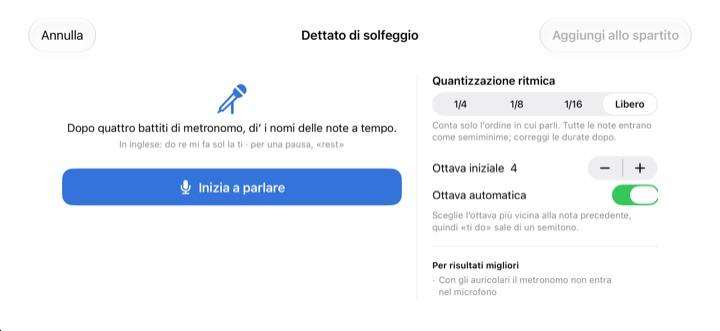
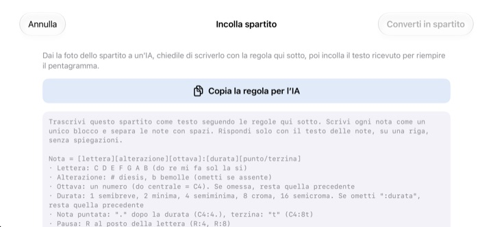

Smetti di contare a mente.
Ascolta.
Copia sul pentagramma le due battute che ti mettono in difficoltà e premi Riproduci. Dopo una battuta di conteggio iniziale, StaffSinger le suona a tempo con il metronomo, con ritmo e altezza esatti.
Tutte le funzioni sono gratuite. Per iPhone e iPad.

Scrivi qualche nota e ascolta
Tieni premuto sul pentagramma, scorri in su o in giù per cambiare l’altezza e rilascia per inserire la nota. Premi Riproduci: prima una battuta di conteggio, poi le tue note. Alza il volume, la pagina emette suoni.
Hai perso di nuovo il conto a metà battuta?
Una croma puntata, poi una semicroma, subito dopo una terzina, e battere il tempo sul ginocchio non basta più. Spesso non c’è nemmeno un pianoforte a portata di mano, come la sera prima della prova. Copia quelle due battute in StaffSinger e le suona esattamente come sono scritte.
Ritmo e altezza, esatti
Dopo una battuta di conteggio iniziale, la musica suona al clic del metronomo e la nota in corso si accende in arancione. Imposta il tempo tra 40 e 200 BPM e scegli 4/4, 3/4, 2/4, 6/8, 2/2 o 3/8.
Metti più note sullo stesso battito e suonano insieme come accordo, e puoi scrivere fino a tre voci. Ci sono chiave di violino, di do e di basso, oltre alle armature di chiave.

Canta i nomi delle note, ottieni le note
Dopo quattro clic del metronomo, di’ do re mi ad alta voce e a tempo, e finiscono sul pentagramma. Se parli proprio sul battito viene catturato anche il ritmo, in semiminime, crome o semicrome. Di’ rest per una pausa.
I nomi si pronunciano in inglese: do re mi fa sol la ti, con ti al posto di si. Il riconoscimento vocale avviene sul tuo dispositivo e niente viene salvato.

Dai la foto a un’IA, incolla il risultato
Tocca Copia la regola per l’IA, passala a un’IA insieme alla foto dello spartito e incolla ciò che scrive. Il pentagramma si riempie. Il formato è nella tabella qui sotto.
Puoi anche fotografare la pagina stampata e tenerla sullo schermo mentre la ricopi a mano.

Si comincia in tre passi
- 1
Scegli le battute difficili
L’app si apre su un pentagramma vuoto di due battute.
- 2
Scrivi le note
Premi sul pentagramma o suona i tasti del pianoforte.
- 3
Premi Riproduci
Un conteggio iniziale, poi l’ascolto con il metronomo.
Formato di testo da incollare
- C4:4
- do nell’ottava 4, semiminima (il do centrale è C4)
- D:8
- Se ometti l’ottava, resta quella precedente
- F#4:8 · Bb4:4
- # per diesis, b per bemolle
- E4
- Se ometti :durata, resta quella precedente
- :1 · :2 · :4 · :8 · :16
- semibreve, minima, semiminima, croma, semicroma
- C4:4.
- nota puntata
- C4:8t
- terzina
- R:4 · R:8
- pause
Il pulsante Copia la regola per l’IA copia esattamente queste istruzioni. Le lettere C D E F G A B corrispondono a do re mi fa sol la si. Separa le note con spazi.
È tutto gratis
Gratis
- Inserimento sul pentagramma e tastiera di pianoforte di due ottave
- Riproduzione con conteggio iniziale e metronomo
- Accordi e tre voci
- Armature di chiave e tre chiavi
- Dettato di solfeggio
- Incolla come testo e foto di riferimento
Sostieni lo sviluppatore
- Lascia una piccola mancia dalle Impostazioni
- Le mance non sbloccano nulla in più
Non è un abbonamento. Ogni mancia è un pagamento singolo.
Niente pubblicità e nessun account.
Domande
Come inserisco le note?
Scegli prima una durata nella barra degli strumenti, poi premi sul pentagramma all’altezza che vuoi. Finché tieni premuto senti la nota, e quando rilasci viene aggiunta. Tocca il pulsante della tastiera per inserire le note su un pianoforte di due ottave.
Come faccio un accordo?
Attiva il pulsante Accordo nella barra degli strumenti e aggiungi le note. Si impilano sulla nota selezionata e suonano insieme.
Come correggo una nota?
Trascina una nota in su o in giù per cambiarne l’altezza, o di lato per spostarla su un altro battito. Con una nota selezionata, i pulsanti ♯ e ♭ la spostano di un semitono e i pulsanti 8va di un’ottava.
Dove cambio il tempo o l’indicazione di tempo?
Nelle Impostazioni, insieme a chiave e armatura. Lì puoi anche attivare o disattivare il metronomo e il conteggio iniziale.
Non sento niente.
Controlla la modalità silenziosa e il volume dei contenuti multimediali. Se manca solo il metronomo, verifica nelle Impostazioni, sotto Aiuti alla riproduzione, che il metronomo sia attivo.
Il dettato sbaglia le note.
Usa le cuffie, così il metronomo non entra nel microfono, e di’ un nome di nota chiaro per ogni battito. Se una nota esce sbagliata, trascinala per correggerla.
Perché serve la fotocamera?
Solo per scattare una foto di riferimento dello spartito da tenere sullo schermo. Le foto non lasciano mai il dispositivo, e puoi sceglierne una dalla libreria senza consentire l’accesso alla fotocamera.
Su quali dispositivi funziona?
Su iPhone e iPad con iOS 17 o successivo. È pensata per l’uso in orizzontale.
La mia musica o la mia voce vengono inviate da qualche parte?
No. Spartiti, foto e voce restano sul tuo dispositivo, e tutto funziona offline. Solo statistiche d’uso anonime e rapporti sugli arresti anomali vanno su iCloud, per aiutare a correggere l’app.
Come posso contattarvi?
Scrivi a leeo@kakao.com. Di solito la risposta arriva entro 2 o 3 giorni lavorativi. Segnalazioni di bug e idee per nuove funzioni sono benvenute anche come issue su GitHub, in M1zz/StaffSinger.
Domande o suggerimenti? Scrivi a leeo@kakao.com.